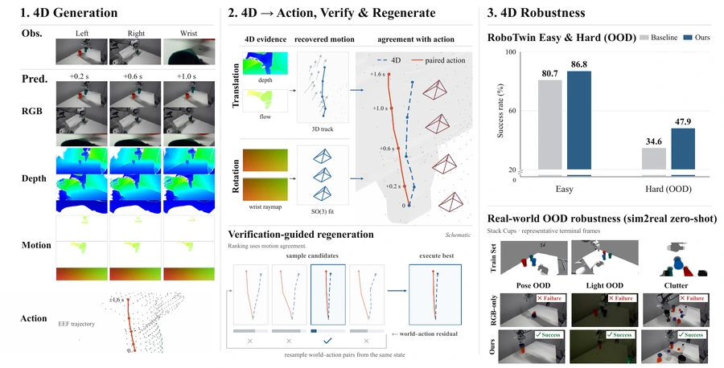
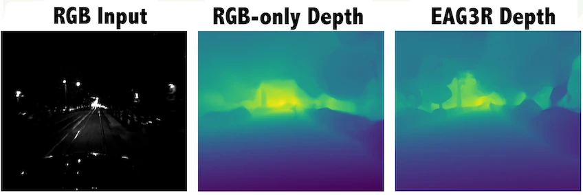

S4NDBOX
Verifiable 4D World–Action Model for Robust Robot Control
Explicit 4D prediction connects visual imagination to robot control, guiding action generation and checking geometric agreement before execution.
Spatial intelligence for physical agents.
My work develops the perceptual and predictive foundations for this goal, from recovering and retaining spatial evidence to imagining physically plausible futures that guide actions and support pre-execution consistency checks.

S4NDBOX
Explicit 4D prediction connects visual imagination to robot control, guiding action generation and checking geometric agreement before execution.

GaMe
A 16-slot geometric working memory combines evidence across views and augments the original visual–language context for spatial question answering.

VideoSSM
Local attention preserves recent detail while recurrent state-space memory retains long-range context, supporting autoregressive long-video generation without an ever-growing KV cache.

EAG3R
Reliability-aware RGB–event fusion and event-based photometric constraints recover geometry in dynamic, low-light scenes, including daytime-to-nighttime transfer.

LiFR-Seg
Event-guided propagation and temporal memory keep semantic predictions up to date between RGB frames, without requiring an image at each query time.

LiFR v2
Propagation reuses observed content, event-guided completion recovers missing source support, and memory retains inferred content for later queries.
EVSplat
Uncertainty-aware Gaussian splatting for dynamic-scene reconstruction with an event camera.
* Equal contribution; † project lead. Author lists are abbreviated; publication and review status are shown for each work.